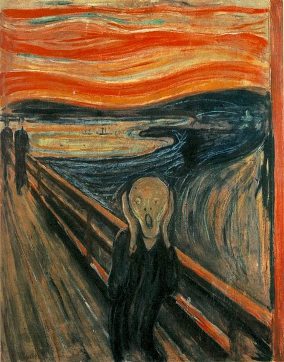

La Gioconda/Monna Lisa.
Por Leonardo Da Vinci en el año 1503.
Por Leonardo Da Vinci en el año 1503.

La joven de la perla.
Por Johannes Vermeer en el año 1665.
Por Johannes Vermeer en el año 1665.

El grito.
Por Edvard Munch en el año 1893.
Por Edvard Munch en el año 1893.